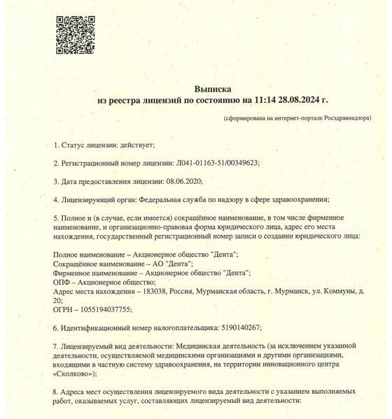

Сведения об организации
Сведения об организации и документы
Реквизиты клиники, лицензия, график приёма граждан руководителем и документы, которые мы публикуем в соответствии с требованиями законодательства.
Об организации
Реквизиты АО «Дента»
Акционерное общество «Дента» оказывает стоматологическую помощь в Мурманске с 1986 года.
- Полное наименование
- Акционерное общество «Дента»
- Сокращённое наименование
- АО «Дента»
- ОГРН
- 1055194037755 · запись в ЕГРЮЛ от 26.08.2005
- ИНН / КПП
- 5190140267 / 519001001
- Адрес места нахождения
- 183038, г. Мурманск, ул. Коммуны, д. 20 · схема проезда на Яндекс.Картах · 2ГИС
- Телефон
- +7 (8152) 47-24-72
- Электронная почта
- oao-denta@yandex.ru
- Режим работы
- Пн–Пт 8:00–19:00 · Сб 9:00–15:00 · Вс — выходной
- Руководитель
- Елпанова Татьяна Анатольевна, генеральный директор
Лицензия
Лицензия на медицинскую деятельность выписка из реестра
Сведения приведены по выписке из реестра лицензий, сформированной на портале Росздравнадзора. Актуальный статус всегда можно проверить в реестре.
- Статус на дату выписки
- действует
- Регистрационный номер
- Л041-01163-51/00349623
- Дата предоставления
- 08.06.2020
- Лицензирующий орган
- Федеральная служба по надзору в сфере здравоохранения (Росздравнадзор)
- Вид деятельности
- Медицинская деятельность
- Адрес осуществления
- 183038, г. Мурманск, ул. Коммуны, д. 20
- Работы и услуги
-
Первичная доврачебная помощь (амбулаторно): рентгенология; сестринское дело; стоматология; стоматология ортопедическая.
Первичная специализированная помощь (амбулаторно): организация здравоохранения и общественное здоровье; эпидемиология; ортодонтия; стоматология ортопедическая; стоматология терапевтическая; стоматология хирургическая. - Приказ лицензирующего органа
- № 6929 от 29.07.2022
- Дата и время выписки
- 28.08.2024, 11:14
Выписка носит информационный характер: после её составления в реестр могли быть внесены изменения. Документ подписан электронной подписью Росздравнадзора.

Открыть полностьюРуководство
Приём граждан руководителем
Генеральный директор лично принимает граждан по вопросам качества помощи, обращениям и благодарностям.
- Принимает
- Елпанова Татьяна Анатольевна, генеральный директор АО «Дента»
- Где
- г. Мурманск, ул. Коммуны, д. 20
- Телефон
- 8 (8152) 47-40-00
- Письменные обращения
- oao-denta@yandex.ru
В праздничные дни график может меняться — актуальное расписание приёма уточняйте по телефону.
Документы
Документы клиники для скачивания
Копии документов в формате PDF. Врачи, их образование и аккредитация — на странице «Врачи».
Обращения
Куда обратиться с жалобой
Сначала лучше написать или прийти на приём к директору — мы разбираем каждое обращение. Если вопрос не решён, можно обратиться в контролирующие органы.